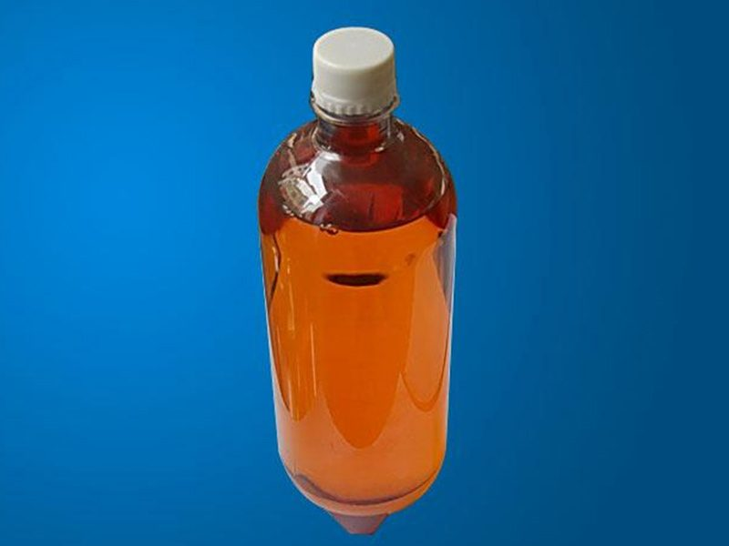
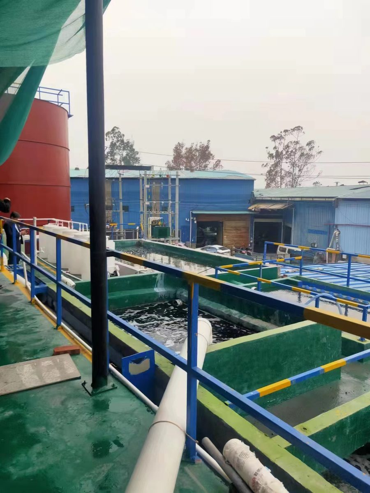
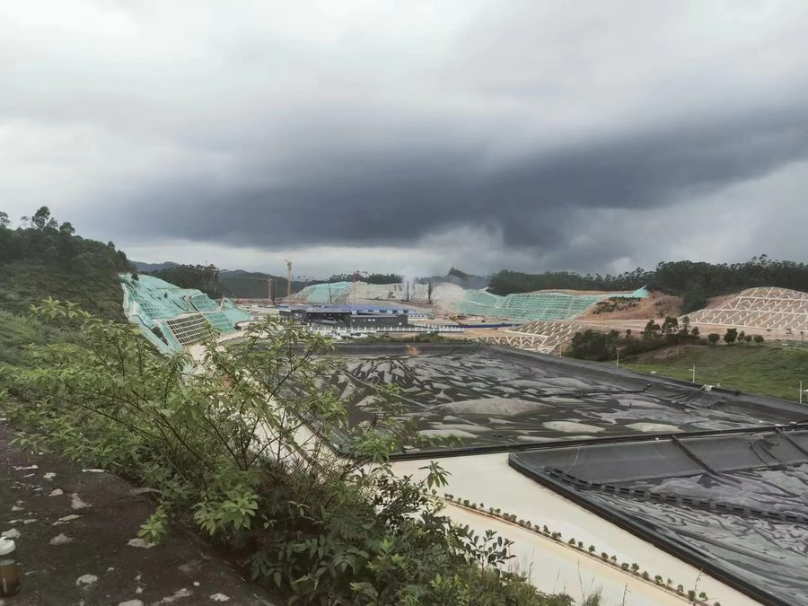

TC-200/TC-260/TC-280/TC-300 系列，用于以含钒重油或原油为燃料的燃气轮机发电机组及燃油锅炉的缓蚀防腐，率先实现国产化替代，产品标准成为中国行业标准。
查看详情 →
TC-350/TC-830/TC-860 系列，用于燃气轮机重质燃油的水洗脱水脱盐处理，也可用于石化厂前端原料油的水洗除盐。
查看详情 →
TC-1703 型，用于高含钙原油或燃料油脱钙，适用于石化厂、燃气轮机发电厂。
查看详情 →
TC-320A 型，用于油田、石化厂、发电厂含油污水的除油处理，中性配方。
查看详情 →缓蚀阻垢剂 TC-88D（无磷）、杀菌灭藻剂 TC-688A（非氧化性）等系列，用于工业循环冷却水系统。
查看详情 →
TC-1026 型，分散油泥、提高燃油雾化程度、催化二次燃烧，节约燃料并降低排放烟气的格林曼黑度。
查看详情 →
TC-680A/B 型，清除燃气轮机透平系统的灰尘、油垢、积炭等，用于燃气轮机发电机组的在线/离线水洗。
查看详情 →
TC-MD511/TC-MD315 型，用于 FCC 流化催化裂化装置钝钒，保护催化剂活性，适用于石油炼制厂。
查看详情 →
TC-10129 型，高沸点氨基硼酸酯与有机聚硫化物复合制剂，可在 200-400℃ 高温条件下控制常减压蒸馏装置高温部位的环烷酸腐蚀。
查看详情 →
TC-10106 型，中和塔顶冷凝区酸性物质并形成保护膜，控制塔顶轻油部位的酸腐蚀和垢下腐蚀，可替代蒸馏装置的注氨和注缓蚀剂。
查看详情 →
TC-10222 型，有机胺高分子表面活性剂，强力吸附在金属表面形成致密分子膜，用于原油天然气开采集输及炼油装置塔顶低温部位的防腐。
查看详情 →
TC-350 油性系列 / TC-830 水性系列，降低油水界面表面张力、加速油水分离，用于油田和炼厂的原油破乳脱水脱盐。
查看详情 →
FCM 催化自电解技术与 SAO3 臭氧催化氧化技术——难降解工业废水处理的核心材料与工艺原理。
查看详情 →
FCD 电催化粒子电极技术，通过氧化还原反应产生羟基自由基，高效降解皂角酸化废水中的有机污染物。
查看详情 →
电解法降解工业废水 COD——在阳极表面电催化作用或电场产生的自由基作用下使有机物氧化分解。
查看详情 →
臭氧催化氧化工艺，将难降解有机物氧化为小分子物质，处理制药行业高浓度有机废水。
查看详情 →
含铜、含镍、含氰废水的破氰氧化——重金属去除成套处理工艺。
查看详情 →
针对铝制品阳极氧化及化学抛光工序产生的含酸废水的处理与资源化技术。
查看详情 →
FCD 三维电解催化氧化反应器——将难降解的环状和长链有机物切割为易降解小分子，同时还原去除重金属离子。
查看详情 →我们的技术团队随时为您提供燃油添加剂与油田助剂的专业解决方案